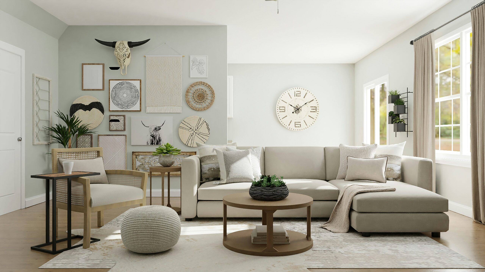

Softened cotton and tactile finishing
The table linen imagery on the site makes Natural Craft's detailing more visible, from scalloped edges to softened folds and dining-ready presentation.
This page reframes Natural Craft as a more complete lifestyle brand by combining official imagery with clearer storytelling around table linen, home styling, gifting, and fashion.
The table linen imagery on the site makes Natural Craft's detailing more visible, from scalloped edges to softened folds and dining-ready presentation.
Bedroom and decor visuals help communicate a wider lifestyle identity, giving the brand more room to feel editorial and complete.
Official campaign banners and apparel imagery create a clearer promotional space for Natural Craft's seasonal clothing edits.

Soft-home imagery helps the brand move from single-product selling into a more complete home and living narrative.
These pieces lead the clearest visual identity for Natural Craft and work well as hero and collection products.
The apparel visuals add energy and help the site feel like a live brand campaign rather than a static product feed.
These visuals give Natural Craft a stronger lifestyle frame and broaden how visitors read the brand.
The featured grid continues the same brand story with product cards that use official images from the Natural Craft website.